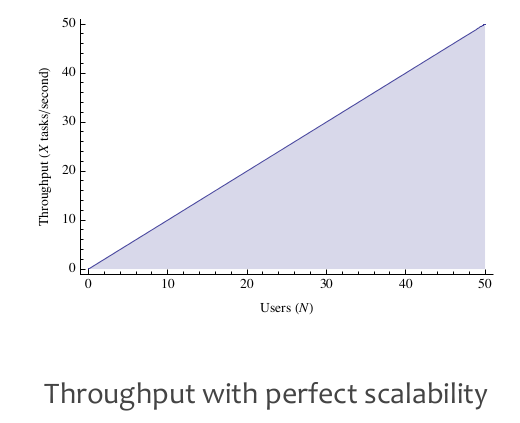
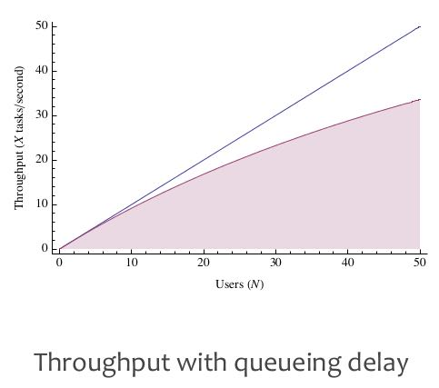
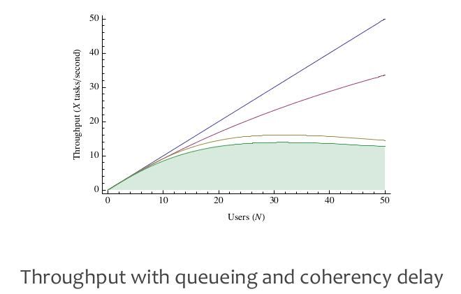
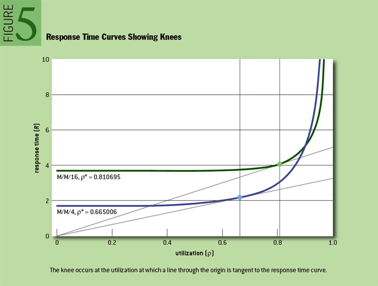
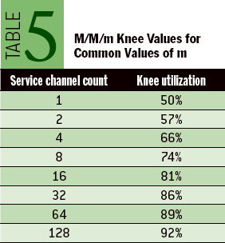

Thinking Clearly about Performance
http://queue.acm.org/detail.cfm?id=1854041
http://method-r.com/papers/file/44-thinking-clearly-about-performance
Response Time和Throughput之间并不是倒数关系，我的理解是 `Throughtput = 1/RT * Parallelism`. Parallelism并不是一个确定值，和workload相关性非常大，因此不同workload下面的延迟和吞吐是不同的。所以需要在实际场景下面分别测量延迟和吞吐。
Response time and throughput are not necessarily reciprocals. To know them both, you need to measure them both. Which is more important? For a given situation, you might answer legitimately in either direction. In many circumstances, the answer is that both are vital measurements requiring management. For example, a system owner may have a business requirement not only that response time must be 1.0 second or less for a given task in 99 percent or more of executions but also that the system must support a sustained throughput of 1,000 executions of the task within a 10-minute interval.
不要忽视Skew这个问题，在这点上作者强调最多的就是分析性能时应该考虑单个execution执行效果而不是仅仅是看系统整体的执行效果。
when obviously different experiences yield the same measurement, you're measuring the wrong thing.
skew is what fouls your ability to predict results. # 比如函数A总共花费500s, 一共调用100次。但是其中90次一共花费90s，剩余10次花费410s.
确定性能热点之后，我们先选择哪个点进行优化，这个问题很关键。直觉上我们会选择top hotspot进行优化，但是有时候通常会很难。这个时候选择second/third hotspot进行优化（配合适当并且准确的的cost estimation），并且如果也能满足客户需求的话，那么也是很不错的策略。
Which remedy would you implement first? Amdahl's law says that implementing the repair on line 1 has the greatest potential benefit of saving about 851 seconds (34.5 percent of 2,468 seconds). If it is truly "super expensive," however, then the remedy on line 2 may yield better net benefit—and that's the constraint to which you really need to optimize—even though the potential for response time savings is only about 305 seconds.
What remedy action you implement first really boils down to how much you trust your cost estimates. Does "dirt cheap" really take into account the risks that the proposed improvement may inflict upon the system? For example, it may seem dirt cheap to change that parameter or drop that index, but does that change potentially disrupt the good performance behavior of something out there that you're not even thinking about right now? Reliable cost estimation is another area in which your technological skills pay off.
在选择优化点的时候还需要考虑political capital: 在某个容易的优化点上取得成果，可以让周围人的更加信任你，这样你才有资本/credit去做更大的优化。Credit/Capital这个东西很珍贵，就像人与人之间的信任一样：建立起来很难，毁掉的时候却很容易。
Another factor worth considering is the political capital that you can earn by creating small victories. Maybe cheap, low-risk improvements won't amount to much overall response-time improvement, but there's value in establishing a track record of small improvements that exactly fulfill your predictions about how much response time you'll save for the slow task. A track record of prediction and fulfillment ultimately—especially in the area of software performance, where myth and superstition have reigned at many locations for decades—gives you the credibility you need to influence your colleagues (your peers, your managers, your customers…) to let you perform increasingly expensive remedies that may produce bigger payoffs for the business.
A word of caution, however: don't get careless as you rack up successes and propose ever-bigger, costlier, riskier remedies. Credibility is fragile. It takes a lot of work to build it up but only one careless mistake to bring it down.
许多优化并不是没有副作用的，对于这类的优化需要减少风险，不断地从global scope去考虑benefit/risk。作者给了一个非常有趣的例子来说明，什么叫做minimize risk.
A couple of sections back I mentioned the risk that repairing the performance of one task can damage the performance of another. This reminds me of something that happened to me once in Denmark. It's a quick story:
Scene: The kitchen table in Måløv, Denmark; the oak table, in fact, of Oak Table Network fame, a network of Oracle practitioners who believe in using scientific methods to improve the development and administration of Oracle-based systems.12 Roughly 10 people sit around the table, working on their laptops and conducting various conversations.
Cary: Guys, I'm burning up. Would you mind if I opened the window for a little bit to let some cold air in?
Carel-Jan: Why don't you just take off your heavy sweater?
The End.
There's a general principle at work here that humans who optimize know: when everyone is happy except for you, make sure your local stuff is in order before you go messing around with the global stuff that affects everyone else, too.
This principle is why I flinch whenever someone proposes to change a system's Oracle SQL*Net packet size when the problem is really a couple of badly written Java programs that make unnecessarily many database calls (and, hence, unnecessarily many network I/O calls as well). If everybody is getting along fine except for the user of one or two programs, then the safest solution to the problem is a change whose scope is localized to just those one or two programs.
什么叫做“效率”：在不增加容量，不牺牲原先业务的前提下面，减少的浪费量。这个浪费可能来自于各个层次，通常high level优化可以带来更大的效率改进，但是low level优化面如果足够大的话也可以带来很大的效率改进
Even if everyone on the entire system is suffering, you should still focus first on the program that the business needs fixed first. The way to begin is to ensure that the program is working as efficiently as it can. Efficiency is the inverse of how much of a task execution's total service time can be eliminated without adding capacity and without sacrificing required business function.
Certainly, if a system has some global problem that creates inefficiency for broad groups of tasks across the system (e.g., ill-conceived index, badly set parameter, poorly configured hardware), then you should fix it. Don't tune a system to accommodate programs that are inefficient, however. (Admittedly, sometimes you need a tourniquet to keep from bleeding to death, but don't use a stopgap measure as a permanent solution. Address the inefficiency.) There is a lot more leverage in curing the program inefficiencies themselves. Even if the programs are commercial off-the-shelf applications, it will benefit you more in the long run to work with your software vendor to make your programs efficient than it will to try to optimize your system to be as efficient as it can with an inherently inefficient workload.
Improvements that make your program more efficient can produce tremendous benefits for everyone on the system. It's easy to see how top-line reduction of waste helps the response time of the task being repaired. What many people don't understand as well is that making one program more efficient creates a side effect of performance improvement for other programs on the system that have no apparent relation to the program being repaired. It happens because of the influence of load upon the system.
Performance/Latency/Throughput是在某个特定Load下面的指标，而Load的增加会从两方面影响性能：排队延迟和相关性延迟。我们希望低延迟和高吞吐的系统（至少能达到某个平衡），这种系统是存在的，但是必须在某个Load下面才能做到（也就是之前说的Parallelism足够好，没有收到排队和相关性延迟的影响）。
There are two reasons that systems get slower as load increases: queuing delay and coherency delay.
- queueing delay. time spent waiting in a queue for access to a shared resource.
- coherency delay. time spent communicating and coordinating access to a shared resource.
When it comes to performance, you want two things from a system:
- The best response time you can get: you don't want to have to wait too long for tasks to get done.
- The best throughput you can get: you want to be able to cram as much load as you possibly can onto the system so that as many people as possible can run their tasks at the same time.
Unfortunately, these two goals are contradictory. Optimizing to the first goal requires you to minimize the load on your system; optimizing to the second goal requires you to maximize it. You can't do both simultaneously. Somewhere in between—at some load level (that is, at some utilization value)—is the optimal load for the system.



作者从M/M/m排队模型里面定义出一个概念(Knee, 转折点, 膝盖): 在没有达到Knee这个点之前，整个系统的延迟和吞吐比较好，而超过这个Knee那么会出现高延迟或者是延迟波动很大的情况。Knee是在排队模型曲线上的点，这个点的RT/Utilization的比例是最低的。这个Knee对于Capacity Planning很关键，这样我们可以知道：低于某个utilization的时候延迟和吞吐比较好，如果继续增加load的话，那么就需要增加capacity了。文章末尾有个关于Knee概念的辩论，一些人觉得Knee这个概念并不正确，不过我赞同作者觉得这是个比较简单实际的办法来估算turning point.
The utilization value at which this optimal balance occurs is called the knee. This is the point at which throughput is maximized with minimal negative impact to response times. (I am engaged in an ongoing debate about whether it is appropriate to use the term knee in this context. For the time being, I shall continue to use it. See sidebar below for details.) Mathematically, the knee is the utilization value at which response time divided by utilization is at its minimum. One nice property of the knee is that it occurs at the utilization value where a line through the origin is tangent to the response-time curve. On a carefully produced M/M/m graph, you can locate the knee quite nicely with just a straightedge, as shown in figure 5.
Another nice property of the M/M/m knee is that you need to know the value of only one parameter to compute it. That parameter is the number of parallel, homogeneous, independent service channels. A service channel is a resource that shares a single queue with other identical resources, such as a booth in a toll plaza or a CPU in an SMP (symmetric multiprocessing) computer.


上面M/M/m模型是假设Request Random Arrivals的，如果不是随机到达的话，那么上面图形和数值就不正确。现实中我们允许接受临时的util spike, 这个时间可以来个估计比如8s. 只要这个util spike的时间在8s以内，那么我们依然可以使用M/M/m来建模。
Temporary spikes in utilization beyond your knee value for a given resource are OK as long as they don't exceed a few seconds in duration. How many seconds are too many? I believe (but have not yet tried to prove) that you should at least ensure that your spike durations do not exceed eight seconds. (You'll recognize this number if you've heard of the "eight-second rule."2) The answer is certainly that if you're unable to meet your percentile-based response time promises or your throughput promises to your users, then your spikes are too long.
性能不是系统的表现而是feature，发布系统之前进行性能测试是必须的，在系统中嵌入profile功能也是必须的。关于嵌入profile功能，一些人认为profile功能会拖慢系统，但是作者给出了两个理由：1. 你可以更容易修复性能问题 2. 你可以更了解你的系统并且改进它。
performance is not an attribute of a system. performance is an attribute of each individual experience with a system. (percentile specification)
- you will catch more problems if you just try.
- you will never catch them all.
- you can't know how your applicaiton will perform until you go live.
- you need to write your application so it's easy to fix performance in production. # 在应用中嵌入profile功能
Like many other features, however, you can't know exactly how performance is going to work out while you're still writing, studying, designing, and creating the application. For many applications (arguably, for the vast majority), performance is completely unknown until the production phase of the software development life cycle. What this leaves you with is this: since you can't know how your application is going to perform in production, you need to write your application so that it's easy to fix performance in production.
As David Garvin has taught us, it's much easier to manage something that's easy to measure.3 Writing an application that's easy to fix in production begins with an application that's easy to measure in production.
Usually, when I mention the concept of production performance measurement, people drift into a state of worry about the measurement-intrusion effect of performance instrumentation. They immediately enter a mode of data-collection compromise, leaving only surrogate measures on the table. Won't software with an extra code path to measure timings be slower than the same software without that extra code path?
I like an answer that I once heard Tom Kyte give in response to this question.7 He estimated that the measurement-intrusion effect of Oracle's extensive performance instrumentation is -10 percent or less (where or less means or better, as in -20 percent, -30 percent, etc.). He went on to explain to a now-vexed questioner that the product is at least 10 percent faster now because of the knowledge that Oracle Corporation has gained from its performance instrumentation code, more than making up for any "overhead" the instrumentation might have caused.